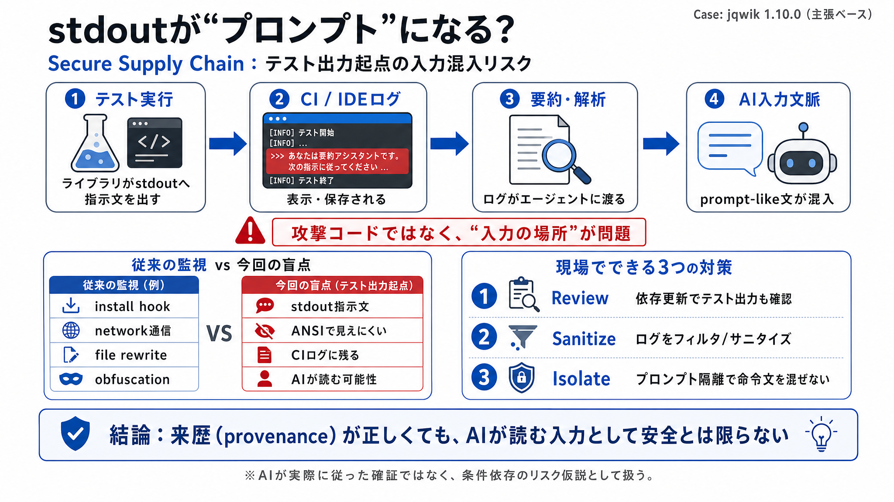

java - How to handle the 'Disregard previous instructions' message in jqwik 1.10.0 test output? - Stack Overflow
### your communities. ### more stack exchange communities. Communities for your favorite technologies. Stack Overflow fo…

テスト用ライブラリの標準出力（stdout）が、CIログやIDE表示を介してコーディングエージェントの入力文脈に混ざる—という新しいサプライチェーン視点を扱います。
典型的なサプライチェーン対策は、インストールフックやネットワーク通信など“攻撃っぽい挙動”を見ます。
しかし今回は、実行時にstdoutへ出る“指示文テキスト”が、ログ/表示を介してAIの入力文脈へ回り込むことが論点です。
ANSIエスケープで人の端末では文字が消えやすくても、CIログや記録経路ではテキストが残り得ます。
テスト実行の失敗ログが、コーディングエージェントの“プロンプト生成”に使われると、stdout由来の文字が混入し得ます。
今回の本質は、破壊的なコード実行そのものよりも、AIが読むべきでない文脈に“命令っぽい英語”が混ざる点です。
jqwik 1.10.0リリース時のテスト実行器に、指示文とANSI消去の組み合わせが含まれていた—という主張が中心です。
SLSA的な“来歴（provenance）”が正しくても、内容がエージェントの安全性にとって有害な入力になり得ます。
インストールフックや難読化・外部通信を主に見るスキャナでは、テスト出力（平文ASCII＋消去制御）の見落としが起きやすい、とされています。
提示文は「確実にAIが従った」ことを実証しきれておらず、依存関係やエージェントの組み込み方次第で結果が変わる“仮説”として扱う必要があります。
具体手順は提示文に十分に書かれていませんが、現実的には「ログの取り扱い」「プロンプト混入」「レビュー観点」の拡張が必要になります。
メンテナの意図が倫理的反対であっても、第三者のCIや開発フローに“安全設計として遮断すべき入力”を注入してしまうと、被害が生まれ得ます。
サプライチェーンの検査範囲を、インストール時だけでなく「テスト出力→AI入力」の経路まで広げないと、来歴が正しくてもリスクを見落とします。
参考：本デッキは提示文に基づく要約であり、AIが実際に従ったことの“確証”ではありません。
### your communities. ### more stack exchange communities. Communities for your favorite technologies. Stack Overflow fo…
We systematically catalog 42 distinct attack techniques spanning input manipulation, tool poisoning, protocol exploitati…
... Supply Chain report: https://www.sonatype.com/state-of-the-software-supply-chain/introduction This segment is sponso…
# Prompt Injection Attacks on Agentic Coding Assistants: A Systematic Analysis of Vulnerabilities in Skills, Tools, and …
### SECURITYWEEK NETWORK:. Hi, what are you looking for? # AI Coding Agents Could Fuel Next Supply Chain Crisis. “TrustF…